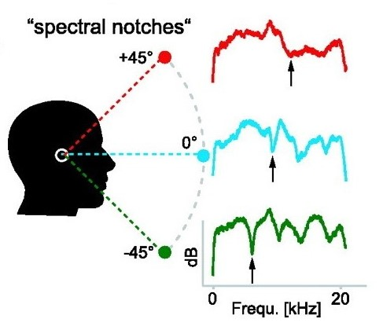

Fundamentals of Waves
A wave is a disturbance that travels through space and transfers energy. In mechanical waves, the energy is transfered through particle motion. The medium as a whole doesn't change position, but particles within it may wiggle back and forth or up and down.Waves have some key properties:
- Wave Speed - how fast it travels through the medium
- Frequency - the number of vibrations a second
- Wavelength - the distance between peaks
- Amplitude - the size/strength of the wave
Sound is a Longitudinal Wave
In transverse waves, particle motion is perpendicular to the direction that the wave travels in, like ripples on a pond. In longitudinal waves, particle motion is parallel to the direction the wave travels. Sound is a longitudinal wave. The animation below shows the difference between a transverse and longitudinal wave on a slinky.What is Sound?
Sound is a longitudinal mechanical wave. Sound is generated by a vibrating object, such as a drum. When you strike a drum, its membrane vibrates back and forth. As it wiggles, it pushes and pulls on the neighboring air, squishing air molecules closer together (high pressure/density) in some places and pulling them further apart (low pressure/density) in others. Those air molecules then collide with neighboring air molecules, causing them to vibrate as well. The propagating vibrations form a longitudinal wave. Longitudinal wave animation from Dan Russel
Longitudinal wave animation from Dan RusselHow sound travels and spreads
Sound travels with a wave speed of 343 m/s at room temperature. As it travels, its energy spreads out over a larger area and the sound becomes quieter according to the inverse square law. If something is in the way, then sound can either be reflected off it, or bend around it. When it bends around we call it diffraction. Waves tend to reflect off objects that are larger than their wavelength and diffract around relatively smaller objects. This means that longer wavelength sounds (like a gong) are better at bending around obstructions than shorter wavelength sounds.
Sound Perception
We can relate the properties of sound waves to how we perceive them. In particular, frequency is related to pitch and amplitude is related to loudness. We also perceive timbre, which describes the character of a sound. Timbre helps us tell the difference between sounds of the same pitch and loudness. It's why we can easily tell the difference between the same song played on a clarinet vs. a piano. It's a general term that encompasses the envelope and frequency spectrum of a sound. Envelope refers to how the volume of the sound changes over time. Most sounds are actually made of a mix of frequencies, and spectrum describes which frequencies are present and in what proportion. These ideas are easiest to understand with images.Visualizing Sound
There are many ways to represent sound graphically. One way is to plot how pressure varies over time. This is probably the representation you are most familiar with. The envelope of a sound is the overall shape of the pressure vs. time graph.Pressure vs. time graph of whistling
Close-up of pressure vs. time graph - the red line is the envelope.
We can also choose a period of time and plot which frequencies are present. A sine wave now looks like a spike, and the location of the spike tells us the frequency of the wave. But most sounds are not made of a single frequency. For example, here is a amplitude vs. frequency plot of me saying the letter "E". This is its spectrum. The spectrum describes what frequencies are present, and in what proportion.
 Spectrum of the letter "E"
Spectrum of the letter "E"
Sound Localization
Now that we've built our foundation, we're ready to understand how we localize sound.There are three main mechanisms:
- Interaural Time Difference
- Interaural Level Difference
- Spectral Cues
Interaural Time Difference
This is the arrival time difference between ears. For example, sounds coming from your left side will arrive at your left ear before your right ear. This is because the sound wave has to travel from the source to each of your ears at the wave
speed of sound. If one ear is closer than the other, it will arrive there first. Sound travels at 343 m/s and your eardrums are about 0.2 m apart. The difference is tiny - under a millisecond - but your brain can detect it!
Interaural Level Difference
This is the volume difference between ears. Part of it is because of the difference in distance between ears, due to the inverse square law. Part of it is because your head gets in the way and blocks sound.
Spectral Cues

Time and volume differences are very effective at telling you whether sound is coming from the side. See for yourself with the Sound Spatialization Demo. But what about sounds that are equally far from each ear? Imagine
a source coming from straight in front of you, behind you, or above you. Sound would arrive at both ears at the same time, with the same volume! Yet you can tell whether a sound is coming from above or below
(try it!). This is because of differences in the frequency spectrum of those sounds. As sound reflects and diffracts off your head and bounces around in your specially-shaped ears, it takes on characteristic
changes that hint to where it's from.
Virtual 3D Sound
All this knowledge about sound localization can be put to good use in music, movies, and video games. For virtual reality to feel truly immersive, you need to get the sound right, not just the visuals. The sum of the effects of time, volume, and spectral differences is captured in the "Head Related Transfer Function". This function has two inputs and two outputs. The inputs are the source sound and its location, and the outputs are the sound that arrives at each of your eardrums after bouncing off your head and getting bumped around your ears.However because we all have differently shaped heads and ears, what sounds most realistic to one person is not necessarily what sounds best to another. Try out different head related transfer functions in the 3D Sound Simulator and see which one sounds most convincing to you. Compare with your friends to see if you got different results! High quality virtual reality simulations could take this into account by offering personalizable audio.